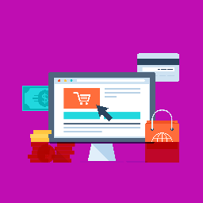

How to Build a PC: The Ultimate Beginners Guide
A comprehensive guide from Tom's Hardware that walks beginners through the step-by-step process of building a PC, perfect for users learning to use the website's build creation and compatibility tools.
Our platform is designed to empower users to research, compare, and build custom PCs by offering tools for component selection, compatibility checks, and price tracking.
It fosters a vibrant community of tech enthusiasts, gamers, and content creators who share builds, reviews, and advice, promoting education and skill development in PC assembly.
By incorporating features like energy-efficient component recommendations and resources for underrepresented groups, the website aims to promote sustainability and inclusivity in the tech space.
The platform connects consumers, manufacturers, retailers, and influencers, creating a dynamic ecosystem for PC building and innovation at any time and place!

This is an interactive online workshop guiding users through the process of designing their custom PC build.
Participants will use the website's tools to select components, check compatibility, and optimize their build for performance, budget, or energy efficiency.
This event includes live tutorials from experienced builders, Q&A sessions with tech experts, and step-by-step guidance on using the compatibility checker and build creation tools.
Users can save their builds, share them in real-time with the community for feedback, and learn about sustainable component choices, fostering both education and practical skill development.
This is a community-driven virtual meetup on the website's forums and discussion boards, where users connect to share their PC builds, exchange tips, and discuss the latest hardware trends.
Activities include live build showcases, where participants present their custom PCs, and themed discussions on topics like gaming setups, budget builds, or eco-friendly components.
Users can engage with content creators and influencers, participate in polls, and network with tech enthusiasts, fostering a sense of community and inclusivity across all skill levels.
A comprehensive guide from Tom's Hardware that walks beginners through the step-by-step process of building a PC, perfect for users learning to use the website's build creation and compatibility tools.
A TechRadar article discussing eco-friendly PC building practices, offering insights into selecting energy-efficient components, aliging with the website's sustainability goals.